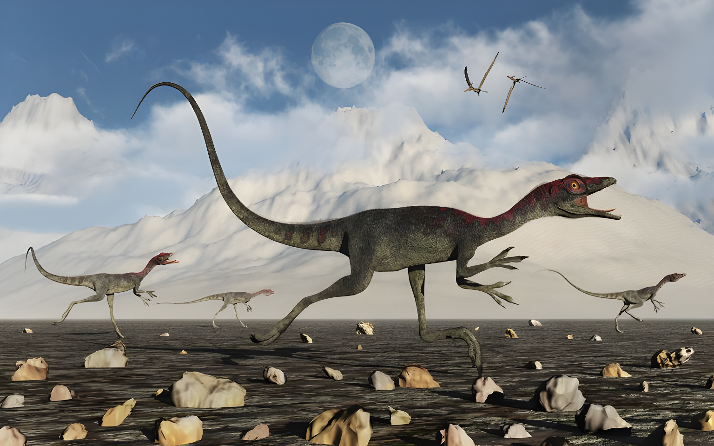
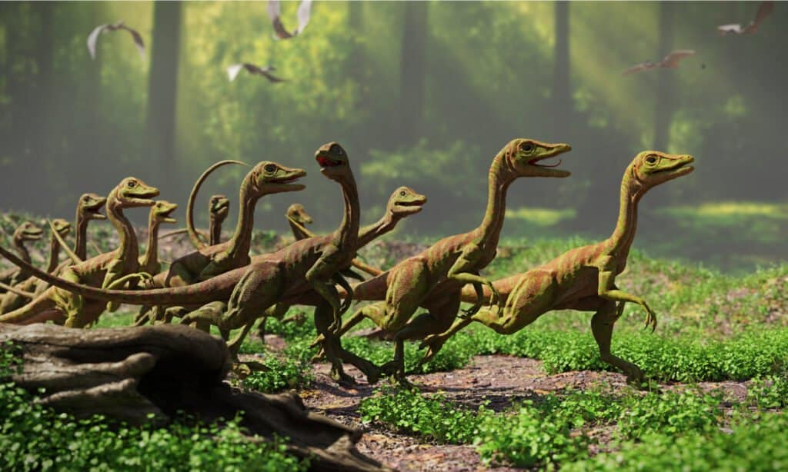
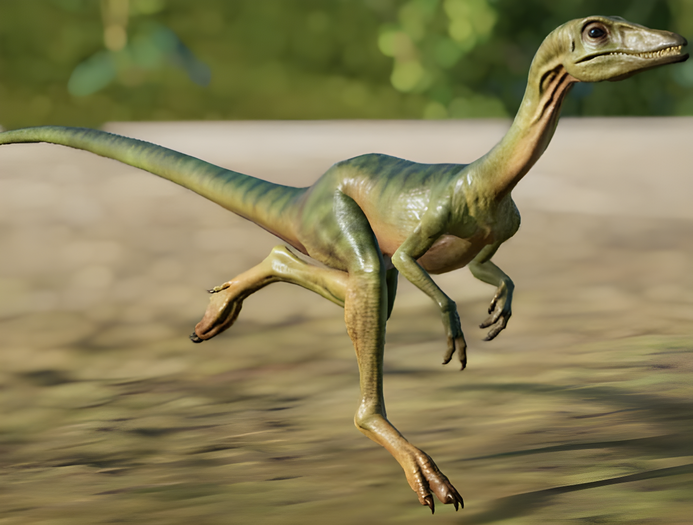
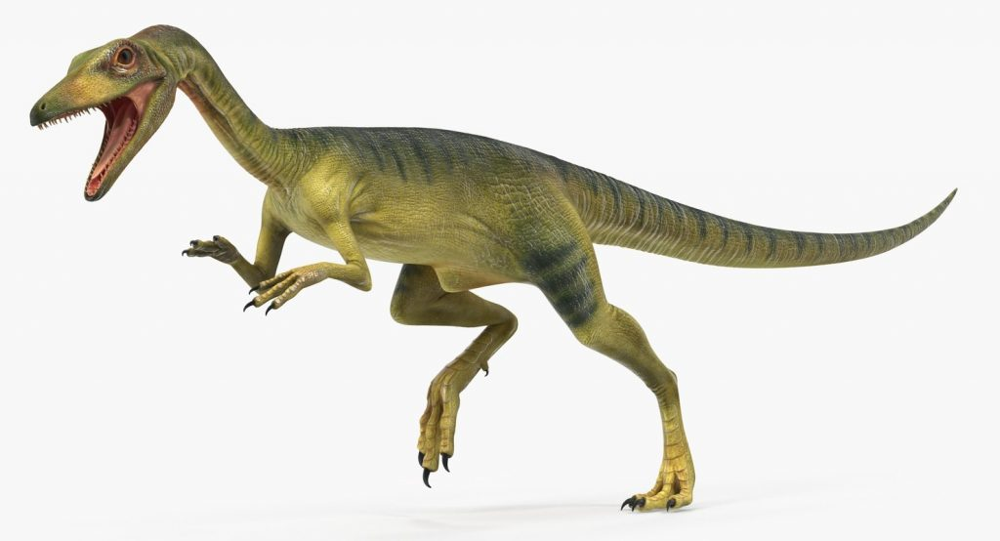
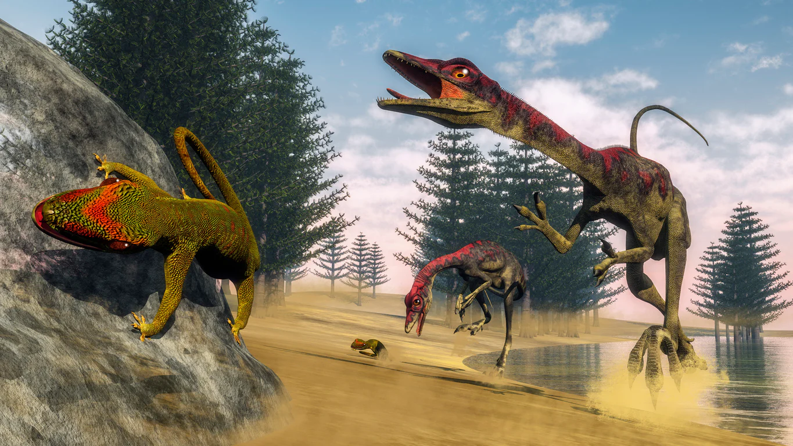
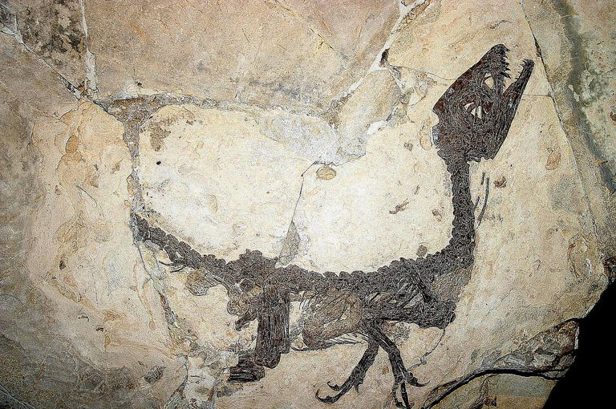
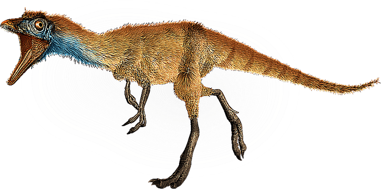
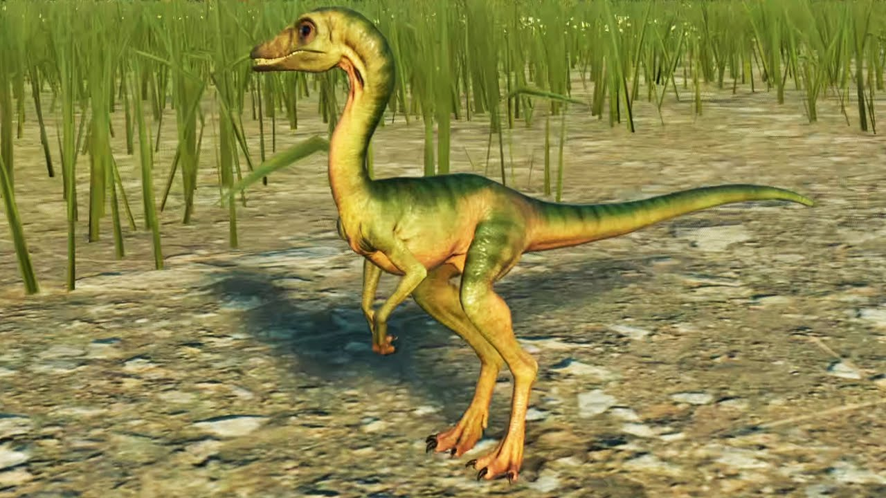
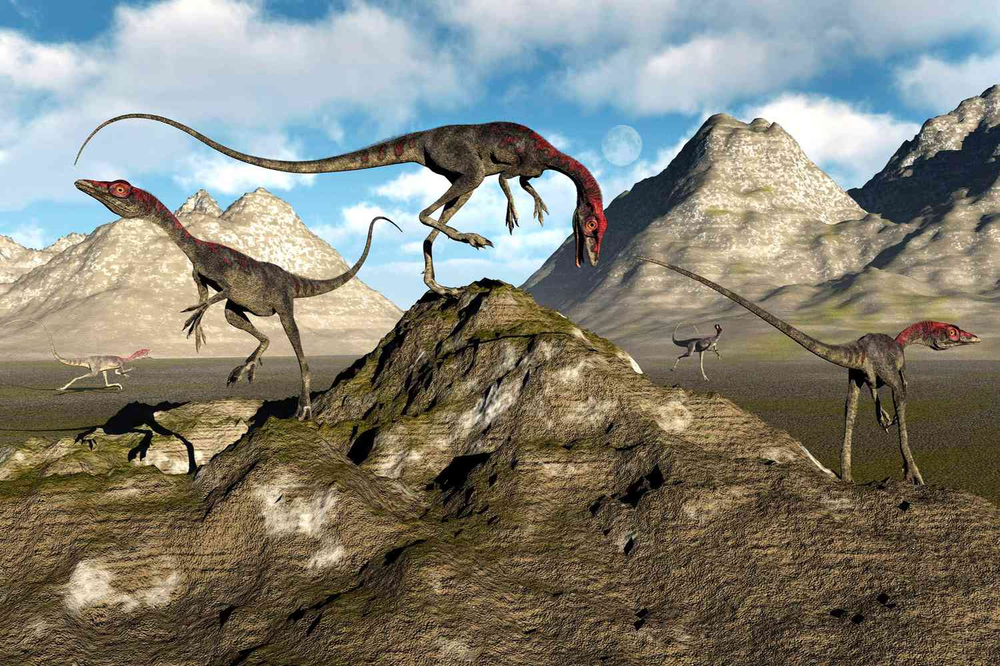

Compsognathus
Khủng Long Mỹ Cáp kỷ Jura
Tổng quan
Kỷ
Jurassic
Họ
Compsognathidae
Chi
Compsognathus
Dài
125 cm
Nặng
3 kg
Thức ăn


Compsognathus là một chi khủng long chân thú đi đứng bằng hai chân. Loài này có kích cỡ bằng một con gà tây và đã sinh sống 150 triệu năm trước đây, giai đoạn đầu Tithonia của cuối kỷ Jura tại khu vực ngày nay là châu Âu.
Nguồn: wikipedia.org
Phân bố
Khu vực Châu Âu
Thông tin thêm về Compsognathus
Kỷ nguyên
Theo niên đại của hóa thạch, các nhà nghiên cứu tin rằng Compsognathus sống cách đây khoảng từ 144 đến 145 triệu năm trước trong giai đoạn đầu Tithonia của thời kỳ cuối kỷ Jura.
Phân bố
Compsognathus sinh sống trong môi trường sống trên cạn, chủ yếu tại châu Âu nơi ngày nay là nước Đức và nước Pháp, nhưng trong kỷ Jura, Châu Âu vẫn còn là các chuỗi đảo ở biển Tethys. Giờ đây, biển Tethys đã trở thành một phần của Đại Tây Dương và Ấn Độ Dương. Những hòn đảo mà Compognathus gọi là quê hương giờ đây là một phần của châu Âu.
Tên khoa học
Được đặt tên bởi nhà cổ sinh vật học Wagner vào năm 1859. Compsognathus lấy tên từ hai từ Hy Lạp: kompsos/κομψός; "thanh lịch" hay "thanh nhã", và gnathos/γνάθος; "hàm" dựa trên những đặc điểm cơ thể nổi bật của chúng. Được dịch theo nghĩa đen, tên của nó có nghĩa là “Hàm đẹp”, chuyển thành tên Hán - Việt là “Mỹ Cáp” - hàm hoàn mỹ.
Kích thước
Nhiều sách báo vẫn mô tả Compsognathus là khủng long có "kích cỡ bằng con gà" do kích cỡ nhỏ của chúng. Với chiều dài ước tính là khoảng từ 65cm đến 125cm và cân nặng từ 2,5kg đến 3kg.

Ngoại hình
Compsognathus là một chi khủng long chân thú đi đứng bằng hai chân và có thân hình mảnh khảnh với chi và đuôi sau dài, giúp chúng cân bằng cơ thể khi di chuyển, cổ khá dài so với tỷ lệ cơ thể, mõm gồ lên với hàm răng sắc nhọn. Chi trước ngắn hơn có ba ngón với các vuốt để giữ chặt con mồi.
Chế độ ăn và săn mồi
Compsognathus là loài ăn thịt, chủ yếu là những động vật nhỏ có xương sống. Có nhiều tài liệu còn ghi lại rằng Khủng long mỹ cáp Compsognathus là loài ăn sâu bọ.
Chúng có tầm nhìn sắc bén và khả năng tăng tốc nhanh chóng để có vượt qua và tóm gọn con mồi. Theo ước tính, tốc độ của chúng là khoảng 17,8 m/s và nó cũng được xem là loài khủng long nhanh nhất di chuyển bằng hai chân. Bên cạnh đó, chúng còn có thói quen nuốt trọn con mồi của mình khi bắt được.
Khám phá
Các nhà cổ sinh vật học đã phát hiện ra hai hoá thạch còn được bảo quản tốt, một ở Đức vào thập niên 1850 và một ở Pháp vào thập niên 1970.
Ngày nay, C. longipes là loài duy nhất được công nhận, mặc dù mẫu vật lớn hơn được phát hiện ở Pháp vào những năm 1970 đã từng được cho là thuộc về một loài riêng biệt có tên là C. corallestris.
Không có lông vũ
Một trong những điều kỳ lạ về Compsognathus - đặc biệt là trong mối quan hệ gần gũi với Archaeopteryx - đó là hóa thạch của nó hoàn toàn không có dấu ấn của lông vũ nguyên thủy. Trừ khi điều này đại diện cho một số tạo phẩm của quá trình hóa thạch, kết luận duy nhất là Compsognathus được bao phủ bằng da bò cổ điển, làm cho nó trở thành ngoại lệ thay vì quy tắc giữa các loài khủng long nhỏ có lông vũ của hệ sinh thái kỷ Jura muộn.
Đã từng là khủng long nhỏ nhất
Với kích thước chỉ bằng con gà tây khi trưởng thành, Khủng long mỹ cáp Compsognathus đã từng được xem xét như là một loài khủng long nhỏ nhất thế giới. Danh dự đó giờ đây thuộc về một chú chim bốn cánh với tên khoa học là Microraptor, nhỏ xíu, có lông chỉ nặng 3 đến 4 pound. Tuy nhiên đây vẫn chưa được xem là bảng xếp hạng chính xác bởi loài Khủng long tiểu phỉ Microraptor chỉ thuộc một nhánh nằm trong quá trình tiến hóa khủng long.
Là bá chủ một vùng
Tuy chỉ có kích thước nhỏ xíu so với nhiều loài khủng long khác nhưng theo các nghiên cứu và dấu vết tìm được thì Compsognathus là con khủng long lớn nhất trong môi trường sống của nó. Khi xem xét các hóa thạch được bảo tồn tinh xảo tại Solnhofen (Đức), các nhà khoa học đã tìm được những dấu vết liên quan đến một hệ sinh thái thời kỳ kỷ Jura muộn. Theo đó, Compsognathus là loài khủng long thực sự duy nhất được lấy ra từ các trầm tích này và có kích thước lớn hơn so với các loài còn lại.
